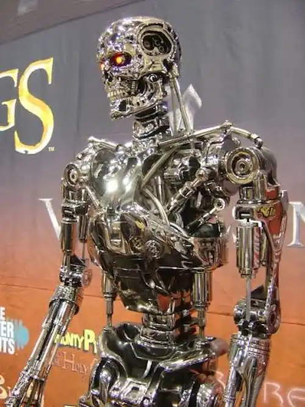
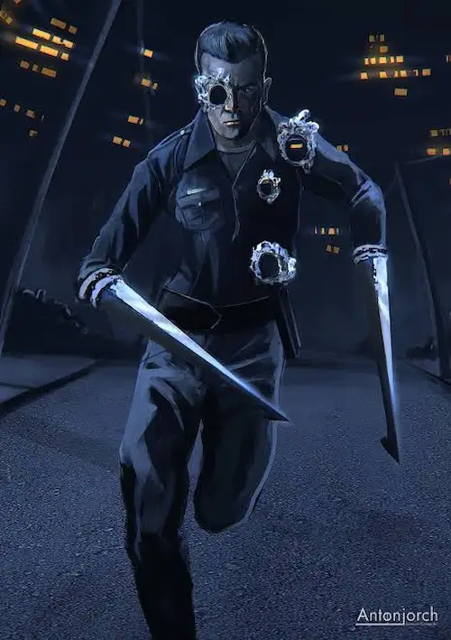
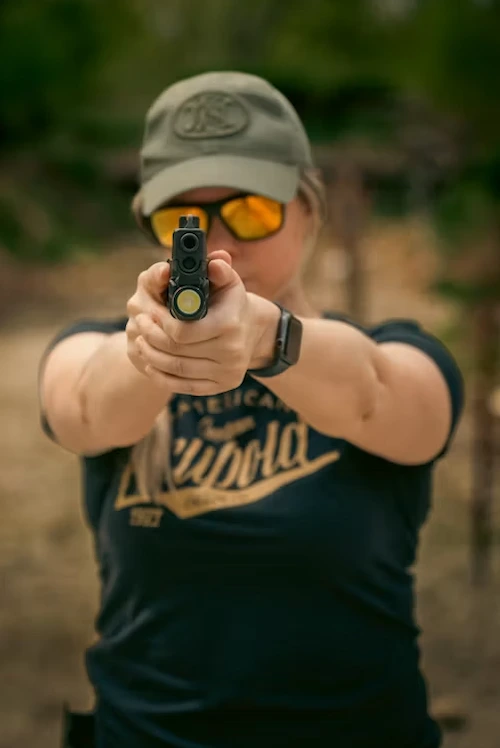
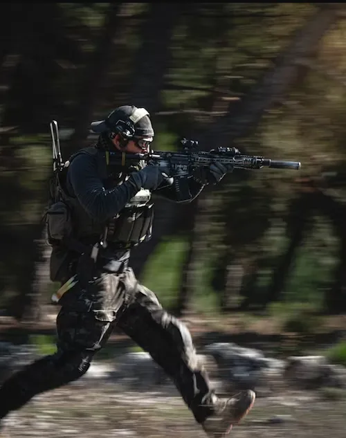

Characters to look out for...

T-800
The T-800 is the original Terminator model and the machine that started it all. Its main objective was to hunt down and eliminate Sarah Connor before she could give birth to the future leader of the human resistance. It has impressive strength and endurance, and while it can pass as human on the surface, later models make it look outdated, less adaptive, less intelligent, and easier to spot if you know what to look for.

T-1000
The T-1000 is everything the T-800 is not; faster, smarter, and nearly indestructible. Built from liquid metal, it can shape-shift into any person or object it touches, making it almost impossible to predict or stop. It doesn't need a weapon, it is the weapon. If the T-800 was a threat, the T-1000 is a nightmare.

Sarah Connor
At the start of the story, Sarah is just like any other woman, kind, humble, and completely unaware of the role she plays in humanity's future. She does not choose her path so much as have it forced on her. What makes her compelling is watching her transform from someone who had no idea the world was about to end into someone who becomes its most important protector.

John Connor
John Connor is the reason Skynet sends Terminators back through time in the first place. As the future leader of the human resistance, he represents humanity's best shot at survival against Skynet. He is optimistic, strategic, and carries the weight of a future he was told about before he ever lived it.
Kyle Reese
Kyle Reese is John Connor's most trusted soldier, and also, as it turns out, his father. He was sent back in time by John himself to protect Sarah Connor, which creates one of the most interesting time travel loops in science fiction. Without Kyle completing that mission, John Connor would never exist to send him in the first place
Character information referenced from Terminator Wiki. Images sourced from Unsplash and Pexels under free license.